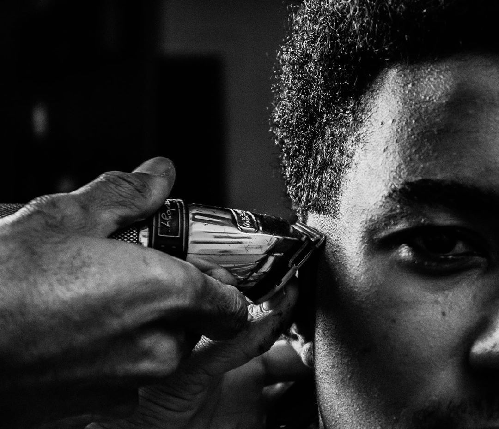
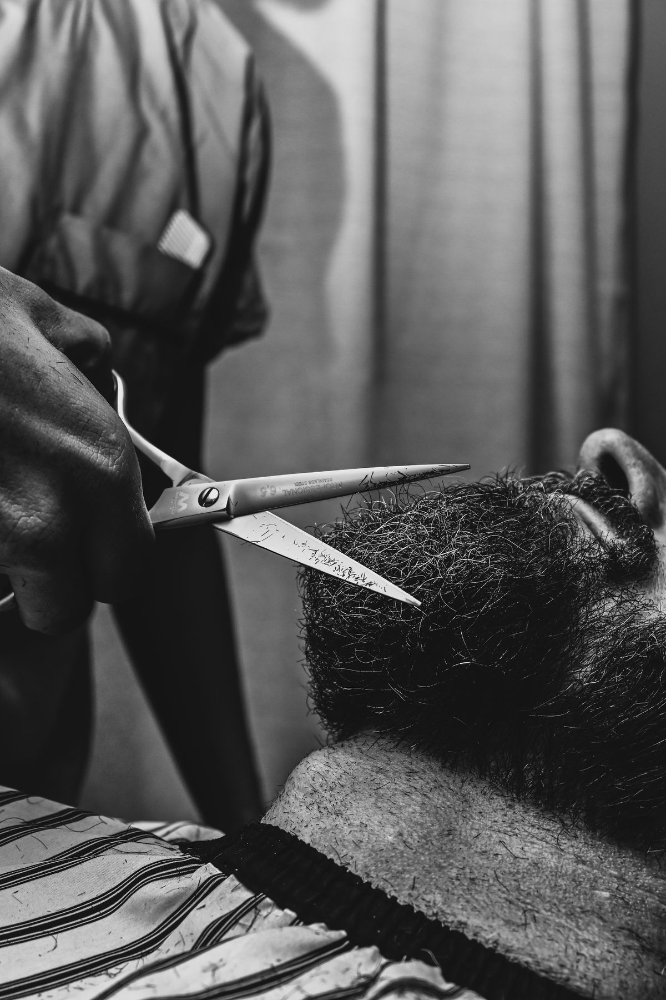

Miért nem mindegy, melyik barber shopot választod?
A barber shop fogalma az elmúlt években teljesen átalakult Budapesten. Ahol korábban néhány hely volt, ma tucatnyi nyílt – különösen a belvárosban, a 7. kerületben. Ez jó hír, de egyben azt is jelenti, hogy a kínálat szélsőségesen vegyes. Van, ahol valóban komolyan veszik a munkát, és van, ahol csak a látszatot keltik.
A különbség nem mindig nyilvánvaló elsőre – a szép belső tér és az Instagram-profil nem feltétlenül jelzi a minőséget. Az igazi prémium barber shop az, amelyik következetesen jó eredményt ad, és ahol a vendég nem csak hajvágást kap, hanem egy olyan élményt, amiért visszamegy.

Mitől lesz egy barber shop prémium?
Néhány konkrét szempont, amelyek mentén valóban el lehet különíteni a prémium és az átlagos barber shopokat – függetlenül az áraktól és a külső megjelenéstől.
Személyre szabott hajvágás
Nem sablonokban gondolkodik. A borbély figyelembe veszi az arcformát, a hajtípust és az életstílust – és ezek alapján javasol stílust, nem csak azt vágja le, amit mutatsz neki.
Precíz szakálligazítás
A szakáll formázása nem rövidítés – hanem az arc arányainak tudatos alakítása. Éles kontúrvonal, az állkapocsvonal kiemelése, a sűrűség és a forma egyensúlya.
Konzisztens minőség
Az egyik legfontosabb különbség: egy prémium barber shopban minden látogatáskor ugyanolyan eredményt kapsz. Nem változik a minőség borbélytól vagy napszaktól függően.
Szakmai tanácsadás
A borbély nemcsak elvégzi a munkát, hanem segít dönteni: melyik stílus illik az arcformádhoz, melyik fade technika a legkedvezőbb, és hogyan tartsd karban otthon.

Az élmény, ami megkülönbözteti
A prémium barber shopban a fizikai eredményen túl maga a folyamat is más. Nem futószalagszerű – van idő a konzultációra, a borbély figyel, és a vendég nem érzi úgy, hogy siettetik.
Ez apróságnak tűnhet, de sokat meghatároz abból, hogy valaki visszamegy-e. Egy átlagos helyen kaphatsz elfogadható hajvágást – de ha minden alkalommal újra kell magyarázni, hogy mit szeretnél, ha az eredmény változó, és ha a légkör kellemetlen, az hosszú távon fáraszt.
- Konzultáció minden alkalommal – nem feltételezi, hogy emlékszel, mit kértél utoljára, hanem megkérdezi
- Tiszta, rendezett környezet – a munkahely állapota tükrözi a szakmai hozzáállást
- Idő a vendégre – nem siettetnek, és a végeredményt megnézik, mielőtt elengednek
- Otthoni tippek – elmondják, hogyan tartsd karban a frizurát a következő látogatásig
Prémium barber Budapest belvárosában
A budapesti barber shop piac az elmúlt években sokat fejlődött – különösen a 7. kerületben, a Dob utca, Király utca és Erzsébet körút környékén. De a mennyiség nem jelent automatikusan minőséget. Érdemes olyan helyet választani, ahol a prémium nem csak marketing – hanem ténylegesen érezhető minden látogatáskor.
A Bosphorus barber shopban a hajvágás mindig konzultációval kezdődik. A borbélyok ismerik az összes modern férfi hajvágási technikát – skin fade, mid fade, textured crop, klasszikus stílusok –, és a szakálligazítás is az arcforma figyelembevételével történik. Az eredmény következetes, és a vendégek többsége rendszeresen visszajár.
- Személyre szabott férfi hajvágás – arcforma, hajtípus, életstílus alapján
- Precíz szakálligazítás és klasszikus borotválás
- Konzisztens minőség minden látogatáskor
- Online időpontfoglalás – Budapest 7. kerület, könnyen megközelíthető
Tapasztald meg a különbséget
Ha eddig nem voltál elégedett a hajvágásoddal, vagy csak szeretnéd tudni, milyen egy valóban prémium barber élmény – foglalj időpontot a Bosphorus barber shopba.